Author：Mat
Date：2022-03-20
Description：談談前端建置與自動化選項
Webpack預設情況下，僅有處理javascript的優化，對於css的處理則是需要另外載入loader做規劃，當然這個也是被bundle的資源之一
對於webpack來說，它比較想做的事情是把css以inline的方式載入，從js檔案中也寫個import css，然後再把css放進<style>的標籤中
當然也有抽出import的css，再做成獨立css檔案的做法，為了瀏覽器的緩存機制，一般我們是比較傾向這種做法的
另外前端常用的工具：Gulp，也能夠做到差不多的事情，那接下來就是兩種都試試看，看一下差在哪裡
萬用的起手式，就是使用npm裝套件，這邊就是安裝css-loader和style-loader
npm install css-loader style-loader --save-dev
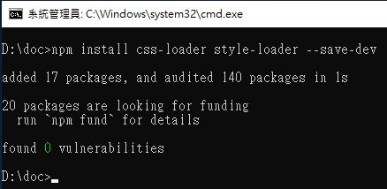
準備的範例檔案，js檔案內都寫上了要import的內容，分別都指向不一樣的css檔案
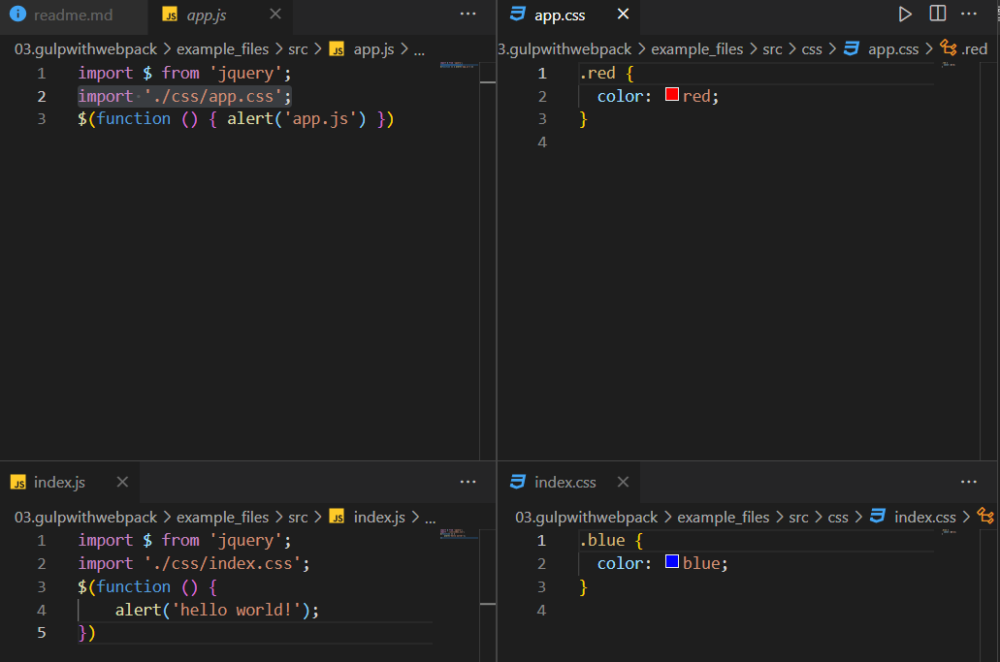
當然使用的config也要做對應載入的調整，不免俗的打包工具要試一下合併結果
const path = require('path');
module.exports = {
mode: 'production',
entry: {
app: './src/app.js',
index: './src/index.js',
main: ['./src/app.js', './src/index.js']
},
output: {
filename: '[name].js',
path: path.resolve(__dirname, 'dist'),
},
module: {
rules: [
{
test: /\.css$/i,
use: ['style-loader', 'css-loader'],
},
],
},
};
再來就是呼叫webpack做事情了，我在package.json檔案中加入buildCss的指令webpack --config css.config.js，直接輸入npx webpack --config css.config.js也可以執行
{
"scripts": {
"test": "echo \"Error: no test specified\" && exit 1",
"build": "webpack --config prod.config.js",
"buildCss": "webpack --config css.config.js"
}
}
npm run buildCss
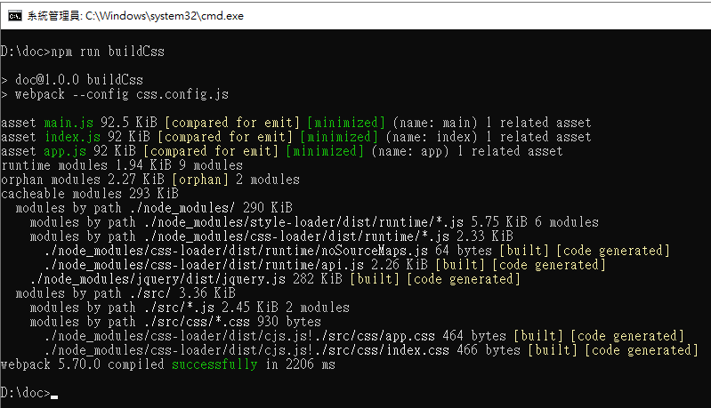
產出結果，合併的也是沒什麼問題，每一個匯入的css檔案都放在<style></style>中
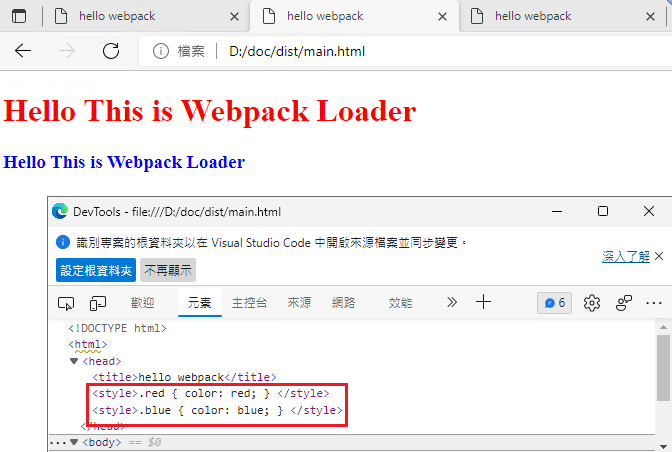
前一步驟中可以發現到每一個import進去的css檔案都會變成一組style的標籤，webpack執行的動作是透過css-loader讀取實體檔案取得stream，接著再靠style-loader將css的內容插入到header中，而style-loader可以透過傳遞參數的方式將內容合併到一個style標籤中，所以將config調整一下，將插入的模式改變
const path = require('path');
module.exports = {
mode: 'production',
entry: {
app: './src/app.js',
index: './src/index.js',
main: ['./src/app.js', './src/index.js']
},
output: {
filename: '[name].js',
path: path.resolve(__dirname, 'dist'),
},
module: {
rules: [
{
test: /\.css$/i,
use: [{
loader: 'style-loader',
options: {
injectType: 'singletonStyleTag',
},
}, 'css-loader'],
},
],
},
};
可以看到在style-loader中送進了一個injectType為singletonStyleTag的參數，調整完之後再做一次webpack，成品就可以看到原本分開的style標籤被合成再一起了
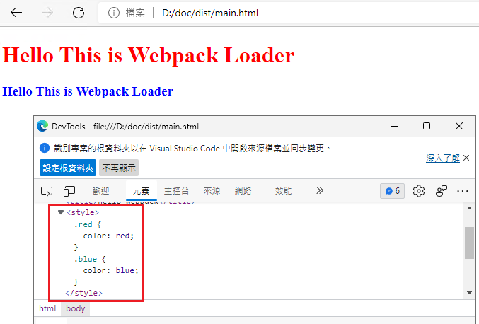
Gulp與Webpack兩者都是屬於前端的工具，但定位點其實有明顯的不一樣
Gulp注重的是工作流程，所以它的內容就是配置一大堆的task，並且定義task應該要做些什麼，像是檔案搬移、內容壓縮合併，簡單來說就是個Task Runner，你想幹什麼都需要給它做提前定義
Webpack注重的是模組打包，可以把所有的資源(.js、.css、.json)都看成一種模組，透過想要執行的項目載入loader和plugins對這些資源進行處理，打包成最合適瀏覽的載入方式，尤其是一些前端框架的編譯，就我來看它比較像是一個編譯器
可能會覺得兩個都能做差不多的事情，但兩種都摸了一下之後，其實就知道兩個有點不太一樣，webpack能做的事情在gulp可以透過載入各種擴充完成，甚至webpack官網上都寫出webpack-stream被稱為gulp-webpack模組(參考)，就是因為這樣，所以容易認為這兩個是差不多的東西，對於後端小白來說，gulp比較親民一點，能在gulpfile.js看到相依的模組，和cs檔案上面那一整排的using namespace差不多，webpack需要透過檢視進入點的js來看有什麼要一起被打包的東西，並且常配合的模組都是前端框架(例如：Vue、React、AngularJs)，沒有在寫的人來看真心不友善
不過幾次這樣操作node.js的建置環境下來，感覺npm modules之間像是平行的關係，雖然沒有特別試過，但我猜可以在package.json中呼叫webpack執行完畢後去找gulp，而gulp本身就可以透過webpack-stream的擴充去使用webpack
但就特性來說，我認為比較適合的方向是使用gulp來做佈署動作，而webpack適合在開發者自己的環境中做前端模組化開發使用
題外話：
看到似乎很神，用來排除未使用的css載入的PurgeCSS (官網)，不管是gulp還是webpack都有相關的插件能夠達成，但瞄了幾眼發現需要讀取到實際載入的html實體檔案就關掉了，對於隨時可以從後台更換內容的CMS系統來說，這個似乎是做不太到
已經裝了很多次npm的package了，現在就簡單一點直接來一套指令，詳細的步驟可以參考官方網站
npm i gulp --save-dev & npm i gulp-cli -g
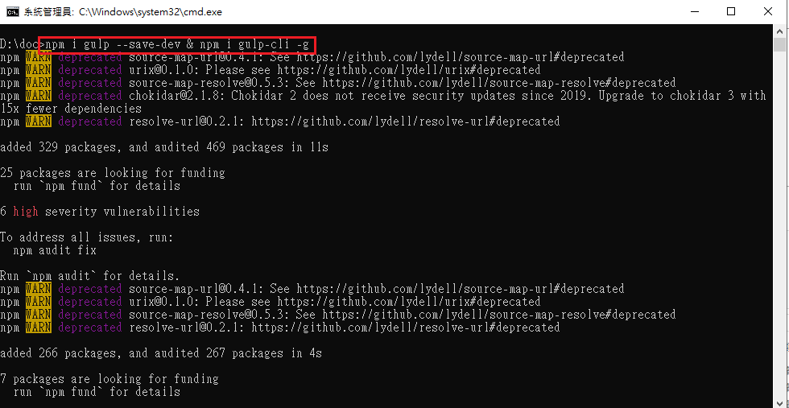
相對於webpack的進入點來說，這一點就不一樣了，webpack的起手式是npm run {build定義} --config {指定config}，或者是npx webpack --config {指定config}，當然也可以完全不指定config，都走預設值設定，但我想應該蠻少人能這樣做
Gulp的起手式非常簡單，切到專案根目錄，打一個gulp就開始執行了，只是要求一定要有個gulpfile.js來做它程式碼的進入點，沒有的話就會很乾脆地告訴你缺了這個檔案
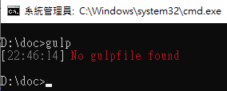
function defaultTask(cb) {
// place code for your default task here
console.log('Hello Gulp');
cb();
}
exports.default = defaultTask
接著就是用個gulp來執行這個定義的default task，就是這麼短，走個default保留字，預設就會去跑囉，而且執行的事情和壓縮js還是壓縮css沒有半毛關係
gulp
執行畫面
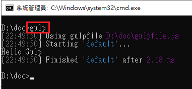
其實做到這裡就會非常有感gulp和webpack的差異處了，webpack預設執行js檔案從npm拉相關的套件出來然後和js檔案本體一起壓縮，想要執行其它的事情則要另外掛loader或plugin(例如：想要做.vue或.ts的建置轉.js，可能這一part才是webpack的重頭戲，但非前端專精的人真是有看沒有懂)
但是gulp很明顯是個什麼都沒有的空殼執行器，default task中寫個印出Hello Gulp，就真的只印出那一句，然後就結束任務
備註：
gulpfile的路徑也和webpack的config一樣可以透過指令--gulpfile切換，詳細可以參考gulp cli的文件
既然前面都說到覺得gulp和webpack應該是同時使用沒什麼問題，坐而言不如起而行，雖然從頭到尾都是坐著打字，但還是來試試看訂下一個目標，並且完成看看吧
webpack執行css bundle的方式對我來說實在不太直覺，在js上面執行import css檔案難以理解，那這邊就把css bundle的任務交付到gulp身上，最後再透過webpack產出js檔案吧
先來做一點測試檔案，以下檔案都放在src下
all.html
<!DOCTYPE html>
<html lang="zh-hant-tw">
<head>
<meta charset="UTF-8">
<title>Working Together</title>
<link href="./all.css" rel="stylesheet" />
</head>
<body>
<h1>挑戰任務</h1>
<ol>
<li>
<h2 class="red">合併css - 紅色</h2>
</li>
<li>
<h2 class="blue">合併css - 藍色</h2>
</li>
</ol>
<script src="./all.js"></script>
</body>
</html>
file1.js
import $ from 'jquery';
$(function () {
$('body').append($('<div>Hello! this is first file.</div>'))
})
file2.js
import $ from 'jquery';
$(function () {
$('body').append($('<div>Hello! this is second file.</div>'))
})
file1.css
.red {
color: red;
}
file2.css
.blue {
color: blue;
}
既然gulp要做的事情是合併css，那就要去找需要的套件
通常我們在做建置並佈署的流程大概是刪除佈署位置的資料，再把建好的檔案移進去
大概排一下要做的事情如下圖
flowchart TD
C{清空佈署資料夾}-->合併css檔案-->建立minify的all.css-->E(移動檔案到佈署資料夾)
C-->執行webpack壓縮js,做成all.js-->E
C-->|移動測試用的all.html|E
所以可能要安裝的擴充套件指令
npm i del gulp-concat-css gulp-clean-css webpack-stream --save-dev
| npm package | description |
|---|---|
| del | 刪除檔案 |
| gulp-concat-css | 合併css檔案 |
| gulp-clean-css | minify css檔案 |
| webpack-stream | gulp-webpack |
因為才玩過webpack，所以檔案總管裡面有點髒，這裡就透過src來指定想要的檔案吧
// 匯入需要的屬性
const { series, parallel, src, dest } = require('gulp');
const del = require('del');
const concatCss = require('gulp-concat-css');
const cleanCss = require('gulp-clean-css');
const webpack = require('webpack-stream');
/**清除dist資料夾 */
function fnClear() {
return del(['dist']);
}
/**合併file css */
function fnCombineCss() {
return src('./src/css/file*.css')
.pipe(concatCss("all.css")) // 透過 gulp-concat-css 合併成指定檔案名稱
.pipe(cleanCss({})) // 透過 gulp-clean-css 壓縮
.pipe(dest('./dist'));
}
/**移動範例html檔案 */
function fnMoveExampleHtml() {
return src('./src/all.html')
.pipe(dest('./dist'));
}
/**執行webpack-stream */
function fnWebpack() {
return src('./src/file*.js')
.pipe(webpack({
mode: 'production',
output: {
filename: 'all.js',
}
}))
.pipe(dest('./dist'));
}
/**測試其它webpack的用法 */
function fnPack() {
return src('./src/entry.js', {
allowEmpty
: true
})
.pipe(webpack({
mode: 'production',
entry: {
file1: './src/file1.js',
file2: './src/file2.js',
},
output: {
filename: '[name].js',
}
}))
.pipe(dest('./dist'))
}
exports.default = series(fnClear,
parallel(fnCombineCss, fnMoveExampleHtml, fnWebpack));
// 如果有必要可自己建立task，並透過gulp {task name}呼叫執行
// 若需要任務列表則是gulp --tasks
exports.deployJs = fnWebpack;
exports.deployCss = fnCombineCss;
exports.deployHtml = fnMoveExampleHtml;
exports.testPack = fnPack;
因為gulpfile已經寫好預設的default任務，所以只要輸入gulp就可以執行了
執行結果
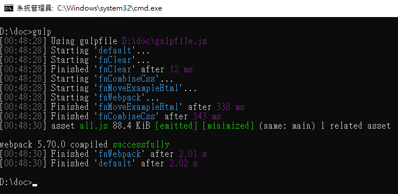
檔案總管看預期佈署的資料夾dist
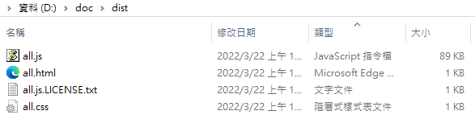
開啟使用產出all.js與all.css的all.html，結果符合預期
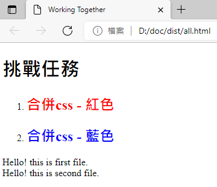
備註：
善用gulp4提供的series、parallel來排執行順序
前面的gulpfile範例多放了一個task來測試webpack的其它種用法，直接從pipe中輸入webpack.config
Task的名稱為testPack，執行後產生webpack後的file1.js與file2.js到dist資料夾下
所以就是輸入gulp testPack，記得要注意大小寫
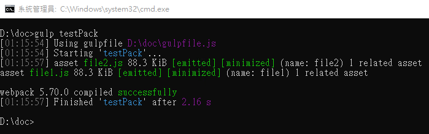
檔案總管中也有出現相關檔案，不過任務沒有做清除，所以先前做的其它檔案都還在原位
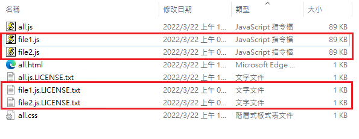
webpack-stream還有很多種用法，可以參考一下官方文件
實際使用上來說，的確gulp與webpack之間有許多功能透過各自的擴充套件加載後，都能做到類似的事情
gulp有明顯的順序性，而且能透過src來使用glob(參考)，webpack預設下則需要將合併的檔案一一指出來，當然可以透過一些其它的套件設定在webpack.config中，來達成一樣效果的檔案搜尋(例如:glob)，但我想最合適的方式還是一個js檔案，然後標示出import的套件，讓webpack透過這些指示去npm尋找對應套件安裝，如同我們使用nuget會將參考套件在專案檔中寫成PackageReference一樣，到最後build的關頭才會放進去bin資料夾或application資料夾中
後端仔還是在這邊淺嚐即止，生命還有更美好的事物~